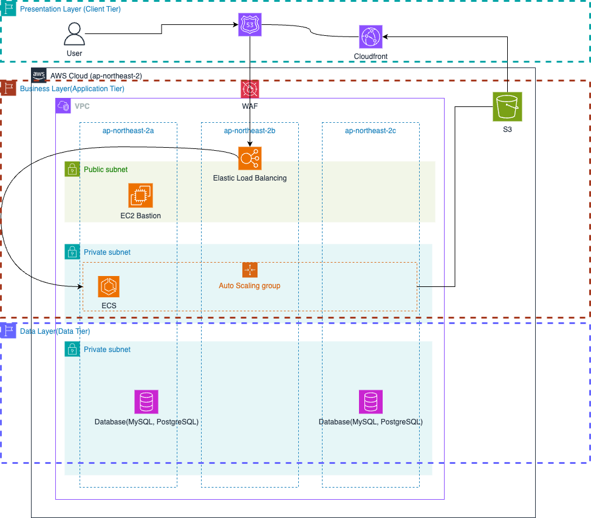

Three tier Architecture & 애플리케이션 스택 및 Git 전략, 배포 방식 정리
3티어 아키텍처란, 어떤 플랫폼을 3계층으로 나누어 별도의 논리적/물리적인 장치에 구축 및 운영하는 형태를 말합니다. 가장 널리 사용되는 구조이기도 합니다.
- 프레젠테이션 계층(Presentation Layer - Client Tier)
- 사용자가 직접 마주하게 되는 계층을 의미합니다.
- 보통 브라우저를 통해 로드되는 화면부를 지칭하므로, Front-end로 정리된다. 다만 이때 데이터를 처리하는 로직등은 포함하지 않습니다.
- 어플리케이션 계층(Business Logic Layer - Application Layer)
- 요청되는 정보를 정해진 규칙에 따라 처리하고 가공하는 것을 담당하는 계층입니다.
- 클라이언트 입장에서는 요청을 보내게 되는 서버로 보여지고, 데이터 계층에서는 요청을 하는 클라이언트로 보여집니다. 동적인 데이터 처리 및 응답, 데이터 계층으로의 데이터 요청등을 담당합니다.
- 데이터 계층(Data Layer - Data Tier)
- 데이터 계층은 데이터 베이스와 데이터베이스에 접근하여 데이터를 읽거나 쓰는 것을 관리하는 것을 포함합니다.
- 주로 DBMS 로 나누게 됩니다.
- 아래 표는 3tier 아키텍처에 대한 예시 그림 입니다.

- 사용자 계층에 대해 현재 CloudFront(CDN)를 이용한 client 측의 배포 및 서비스 운영을 하고 있어서, Client Tier로 정리 했습니다.
- 실제로 데이터 조작 및 비즈니스 로직을 수행하는, 서버단인 ELB -> ECS 에 대해 Application Tier로 정리 했습니다.
- 마지막으로 Data Tier는 DBMS 인 AWS RDS 로 정리 했습니다.
현재 운영중인 아키텍쳐에서는 AWS ECS 기반한 3 Tier 아키텍처로 이루어져 있고, MAU나 DAU 등에 스트레스가 많은 서비스는 아니다.
개발하는 애플리케이션 스택은
Frontend: Dart Framework: Flutter web build 배포: S3 -> CF with codepipeline(code build, code deploy) Language: Python 3.10.12 Framework: FastAPI DBMS: RDS Aurora PostgreSQL 배포: ECS with AWS codepipeline(code build, code deploy)
Deployment¶
CI/CD pipeline¶
-
소스부터 서비스 배포까지 모든 빌드 및 배포 단계는 AWS CodePipeline을 통해 CI/CD 파이프라인으로 구성했으며 다음과 같은 흐름으로 서비스가 배포됩니다.
#### 개발
GitHub > (python code) > CodeBuild > (docker image) > ECR > (docker image) > CodeDeploy > (docker image) > ECS > (container) > CodeBuild(pytest)
#### 운영
GitHub > (python code) > CodeBuild > (docker image) > ECR > (docker image) > CodeDeploy > (docker image) > ECS -
배포 결과는 workchat 메시지로 개발은 52g Studio Dev Test에 운영은 52g Studio 그룹방에 공지됩니다.
Deployment Steps¶
Dev¶
1) 설치된 패키지에 변경이 있다면, 아래 두 방법 중 하나를 실행
1) base 이미지를 새로 빌드하고 ECR에 푸시하기 위해 로컬에서 docker/build/base_image_build.sh를 실행
2) 설치된 파이썬 패키지를 기술한 requirements.txt의 변경을 인식하면, 자동으로 base image를 빌드하는 CI/CD 파이프라인을 자동으로 트리거
2) dev 브랜치에 푸시 또는 병합이 발생하면 AWS CodePipepline이 GitHub의 dev 브랜치 변경사항을 인지하여 CI/CD 파이프라인을 자동으로 트리거
3) GitHub의 dev 브랜치에서 병합된 소스를 zip으로 패키징하여 CodeBuild로 전달하면 api에 대한 docker image를 빌드하고 ECR로 푸시 4) CodeDeploy는 CodeBuild에서 전달받은 ECR의 위치와 ECS의 작업 정의 버전을 참고하여 ECS에 새로운 api 컨테이너를 생성
1) 소스 코드에 문제가 있어서 배포에 실패하면 workchat 메시지로 실패를 전달하며, 직접 문제를 해결하고 다시 파이프라인을 릴리스
2) 소스 코드에 문제는 없지만, CodeDeploy가 appspec 파일 못찾는 경우는 자동으로 재시도
5) CodeDeploy 배포가 성공하면 CodeBuild에서 pytest를 이용해 새로 배포된 API를 대상으로 테스트 케이스를 실행하고 결과 리포트 생성
1) 모두 passed 한 경우에 배포 결과는 workchat 메시지로 전달
2) 테스트 케이스에서 failed 나 error 가 발생하면, 파이프라인은 중지되고 테스트 결과를 workchat 메시지로 전달
Prod¶
1) dev 브랜치를 main 브랜치로 병합하면 AWS CodePipepline이 GitHub의 main 브랜치 변경사항을 인지하여 CI/CD 파이프라인을 자동으로 트리거
2) CodePipepline의 수동 승인 요청
1) prod-bastion(EC2)에 접속해서 최신 main 브랜치의 소스를 패치
2) base 이미지를 새로 빌드하고 ECR에 푸시하기 위해 docker/build/prod-base_image_build.sh를 실행
3) 수동 승인을 확인하고 CI/CD 파이프라인을 계속 진행
3) GitHub의 main 브랜치에서 병합된 소스를 zip으로 패키징하여 CodeBuild로 전달하면 api에 대한 docker image를 빌드하고 ECR로 푸시 4) CodeDeploy는 CodeBuild에서 전달받은 ECR의 위치와 ECS의 작업 정의 버전을 참고하여 ECS에 새로운 api 컨테이너를 생성
4) 소스 코드에 문제가 있어서 배포에 실패하면 workchat 메시지로 실패를 전달하며, 직접 문제를 해결하고 다시 파이프라인을 릴리스
5) 소스 코드에 문제는 없지만, CodeDeploy가 appspec 파일 못찾는 경우는 자동으로 재시도
Dockerfile-base
FROM python:3.10
WORKDIR /sample(가칭)
# Install dependencies
COPY requirements.txt ./requirements.txt
RUN pip install -r ./requirements.txt
Dockerfile
FROM ***********
WORKDIR /sample(가칭)
# Copy modules and tests
COPY api ./api
COPY utils ./utils
COPY tests ./tests
COPY *.py ./
# Copy configuration files
COPY *.ini ./
# Copy static, template files
COPY static ./static
COPY templates ./templates
# Copy docker bootstrap and sync batch scripts
COPY docker/*.sh ./
RUN chmod +x ./*.sh
# Create directory for sync data
RUN mkdir -p /sample/sync_data
VOLUME ["/sample/sync_data"]
EXPOSE 8080
# Run the command on container startup
ENTRYPOINT ["bash", "./boot.sh"]
base_image_build.sh
#!/bin/bash
# ENVIRONMENT VARIABLES
REPOSITORY_URI="********"
COMMIT_HASH=$(git log -1 --grep 'requirements.txt' --pretty=format:"%h")
IMAGE_TAG=${COMMIT_HASH:=latest}
AWS_DEFAULT_REGION=${AWS_DEFAULT_REGION:=ap-northeast-2}
# PRE-BUILD
echo "Logging in to Amazon ECR..."
echo "AWS_DEFAULT_REGION=${AWS_DEFAULT_REGION}"
aws ecr get-login-password --region $AWS_DEFAULT_REGION | docker login --username AWS --password-stdin ********
echo "COMMIT_HASH="$COMMIT_HASH
echo "IMAGE_TAG="$IMAGE_TAG
# BUILD
echo "Build started on `date`"
echo "Building the Base Docker image..."
docker build --platform linux/amd64 -t $REPOSITORY_URI:latest -f ../Dockerfile-base ../..
docker tag $REPOSITORY_URI:latest $REPOSITORY_URI:$IMAGE_TAG
## POST
echo "Build completed on `date`"
echo "Pushing the Base Docker images..."
docker push $REPOSITORY_URI:latest
docker push $REPOSITORY_URI:$IMAGE_TAG
api_image_build.sh
AWS_DEFAULT_REGION=${AWS_DEFAULT_REGION:=ap-northeast-2}
# PRE-BUILD
echo "Logging in to Amazon ECR..."
echo "AWS_DEFAULT_REGION=${AWS_DEFAULT_REGION}"
aws ecr get-login-password --region $AWS_DEFAULT_REGION | docker login --username AWS --password-stdin $REPOSITORY_URI
echo "COMMIT_HASH="$COMMIT_HASH
echo "IMAGE_TAG="$IMAGE_TAG
# BUILD
echo "Build started on `date`"
echo "Building the API Docker image..."
docker build -t $REPOSITORY_URI:latest -f ../Dockerfile ../..
docker tag $REPOSITORY_URI:latest $REPOSITORY_URI:$IMAGE_TAG
## POST
echo "Build completed on `date`"
echo "Pushing the API Docker images..."
docker push $REPOSITORY_URI:latest
docker push $REPOSITORY_URI:$IMAGE_TAG
현재 회사의 Git 브랜치 전략을 공유 드립니다.
Git Branch 전략¶
- 개발은 로컬 환경에서 작업 단위로
feature브랜치를 생성해서 개발 및 테스트 후, 리모트의feature브랜치로 푸시하고 리모트의dev브랜치에
PR을 생성하여 코드 리뷰 후에 병합합니다. 개발 배포 및 테스트 완료 후,main브랜치로 병합하여 운영 환경으로 배포합니다. - 브랜치 종류
- 기본 브랜치: 항상 존재하는 브랜치로
main(또는master),dev가 있습니다. - 보조 브랜치: 임시로 존재하는 브랜치로 각 목적에 맞게 사용하고 기본 브랜치에 병합하고 더 이상 사용하지 않으면 삭제합니다.
feature(기능),hotfix(긴급 버그 수정),refactor(리팩토링),test(테스트),conf(설정)가 있습니다.-
feature¶
- 곧 배포할 기능을 개발할 브랜치로
dev에서 분기되며, 개발이 완료되면 다시dev브랜치에 병합합니다. feature브랜치명은feature/{작업 또는 기능 요약}형식으로 만들며, 다음과 같은 과정으로 작업을 진행합니다.
1)dev에서feature브랜치를 분기(예, 사용자 로그인 관련 작업)
$ git checkout -b feature/sign-in dev2) 개발이 완료되면 커밋한 코드를 로컬feature브랜치를 리모트feature브랜치로 생성하고 푸시
3)$ git push --set-upstream origin feature/sign-indev로 병합하기 전에 리모트feature브랜치에서 PR(Pull Request, 풀 리퀘스트) 생성
4) (선택) PR 생성 시, 코드 리뷰 진행-
bugfix¶
- 배포한 버전에 수정을 해야 할 필요가 있을 경우,
dev브랜치에서 분기하는 브랜치입니다. bugfix브랜치명은bugfix/{작업 또는 기능 요약}(예,bugfix/employee-sync-json)형식으로 만들며 다음과 같은 과정으로 작업을 진행합니다.
1) 배포한 버전에 수정을 해야 할 필요가 있을 경우,dev브랜치에서bugfix브랜치로 분기
2) 나머지 과정은feature브랜치 작업과 동일-
hotfix¶
-
배포한 버전에 긴급하게 수정을 해야 할 필요가 있을 경우,
main브랜치에서 분기하는 브랜치입니다.
dev브랜치에서 문제가 되는 부분을 수정하여 배포 가능한 버전을 만들기에는 시간도 많이 소요되고 안정성을 보장하기도 어려우므로 바로 배포가 가능한main브랜치에서 직접 브랜치를 만들어 필요한 부분만을 수정한 후 다시main브랜치에 병합하여 배포합니다. -
hotfix브랜치명은hotfix-{#major.#minor.#hotfix}(예,hotfix-{1.2.1})형식으로 만들며 다음과 같은 과정으로 작업을 진행합니다.
1) 배포한 버전에 긴급하게 수정을 해야 할 필요가 있을 경우,main브랜치에서hotfix브랜치로 분기
2) 버그를 빠르게 수정하고, 다시main브랜치에 병합하고 다시 배포
3) 새롭게 태깅
4)hotfix브랜치의 변경 사항은dev브랜치에도 병합-
refactor¶
- 특정 모듈(기능명 또는 API명)에 리팩토링이 필요한 경우에
dev브랜치에서 분기하는 브랜치입니다. - 기능의 변경이 없으므로, 반드시 기존 테스트 케이스가 깨지지 않아야 합니다.
refactor브랜치명은refactor/{기능명 또는 API명}(예,refactor/sign-in)형식으로 만들며 다음과 같은 과정으로 작업을 진행합니다.
1) 리팩토링이 필요한 경우,dev브랜치에서refactor브랜치로 분기
2) 나머지 과정은feature브랜치 작업과 동일-
docs¶
- 전체 프로젝트(readme.md)나 API에 대한 문서화(swagger)가 필요한 경우에
dev브랜치에서 분기하는 브랜치입니다. docs브랜치명은docs/{작업 또는 기능 요약}(예,docs/monitoring-tools)형식으로 만들며 다음과 같은 과정으로 작업을 진행합니다.
1) 문서화가 필요한 경우,dev브랜치에서docs브랜치로 분기
2) 나머지 과정은feature브랜치 작업과 동일-
test¶
- 테스트 관련 작업(테스트 케이스 등)이 필요한 경우에
dev브랜치에서 분기하는 브랜치입니다. test브랜치명은test/{테스트 관련 작업명}(예,test/sign-in)형식으로 만들며 다음과 같은 과정으로 작업을 진행합니다.
1) 테스트 관련 작업이 필요한 경우,dev브랜치에서test브랜치로 분기
2) 나머지 과정은test브랜치 작업과 동일 (코드 리뷰는 생략)-
conf¶
- 설정 관련 작업(appspec 리비전 변경 등)이 필요한 경우에
dev브랜치에서 분기하는 브랜치입니다. conf브랜치명은conf/{설정 관련 작업명}(예,conf/datadog-agent-env)형식으로 만들며 다음과 같은 과정으로 작업을 진행합니다.
1) 설정 관련 작업이 필요한 경우,dev브랜치에서conf브랜치로 분기
2) 나머지 과정은conf브랜치 작업과 동일 (코드 리뷰는 생략)
-
-
-